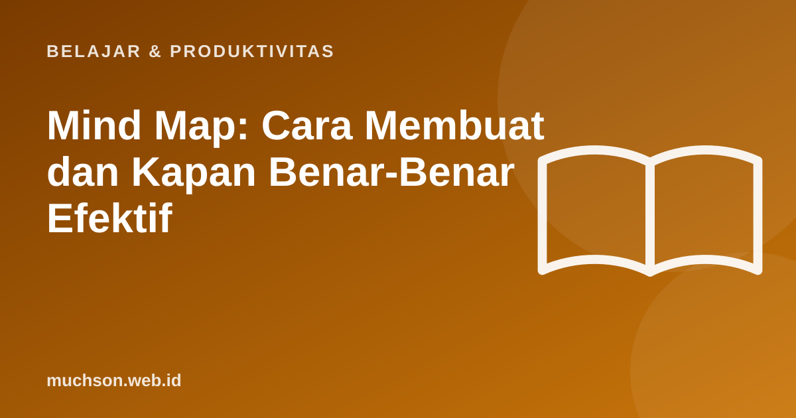

Beranda › Artikel › Belajar & Produktivitas
Belajar & ProduktivitasMind Map: Cara Membuat dan Kapan Benar-Benar Efektif
Mind map atau peta pikiran adalah diagram yang menaruh satu ide di tengah lalu bercabang ke ide-ide terkait. Teknik ini populer untuk belajar, merencanakan, dan brainstorming. Tetapi seperti alat lain, mind map efektif untuk tugas tertentu dan kurang cocok untuk tugas lain.

Struktur mind map
- Topik utama di tengah, sebaiknya satu atau dua kata.
- Cabang utama untuk subtopik. Biasanya 3-7 cabang.
- Ranting untuk detail, contoh, dan istilah.
- Kata kunci, bukan kalimat panjang.
- Warna atau ikon untuk membedakan cabang.
- Garis penghubung antar cabang bila ada hubungan silang.
Apa kata riset?
Farrand, Hussain, dan Hennessy (2002) menguji mind map pada mahasiswa kedokteran dan menemukan peningkatan ingatan jangka panjang atas informasi faktual dibanding metode belajar pilihan mahasiswa sendiri, walau sebagian peserta kurang termotivasi memakai teknik baru itu. Penelitian lain tentang concept map (peta konsep, kerabat mind map yang menekankan label hubungan) juga menunjukkan manfaat, terutama bila pelajar membuatnya sendiri, bukan sekadar membaca peta buatan orang lain.
Manfaat terbesar datang dari proses membuat: memilih kata kunci, mengelompokkan, dan memikirkan hubungan. Menyalin mind map orang lain jauh kurang bermanfaat.
Kapan mind map efektif, kapan tidak
| Efektif untuk | Kurang efektif untuk |
|---|---|
| Brainstorming ide | Urutan langkah yang ketat (pakai flowchart) |
| Melihat gambaran besar satu bab | Perbandingan banyak atribut (pakai tabel) |
| Merencanakan esai atau proyek | Menghafal definisi rinci (pakai kartu hafalan) |
| Menghubungkan konsep antar materi | Data angka (pakai grafik) |
Gabungkan dengan latihan mengingat
Cara memaksimalkan mind map untuk belajar: setelah membuat, tutup mind map itu, lalu coba gambar ulang dari ingatan di kertas kosong. Bandingkan dengan aslinya dan tambahkan yang terlupa dengan warna lain. Ini menggabungkan kekuatan visual mind map dengan latihan mengingat.
Alat membuat mind map
- Kertas dan pensil warna: paling fleksibel dan bagus untuk ingatan.
- Aplikasi mind map atau papan tulis digital: mudah diubah dan dibagikan.
- Fitur diagram di aplikasi catatan untuk mind map sederhana.
Tanya jawab
Apa itu mind map?
Apakah mind map efektif untuk belajar?
Apa beda mind map dan concept map?
Berapa cabang utama yang ideal?
Sumber dan bacaan lanjut
- Farrand, P., Hussain, F., & Hennessy, E. (2002). The efficacy of the mind map study technique. Medical Education
- Nesbit, J. C., & Adesope, O. O. (2006). Learning with concept and knowledge maps: A meta-analysis. Review of Educational Research
- Contoh algoritma, flowchart, dan pseudocode (artikel terkait)